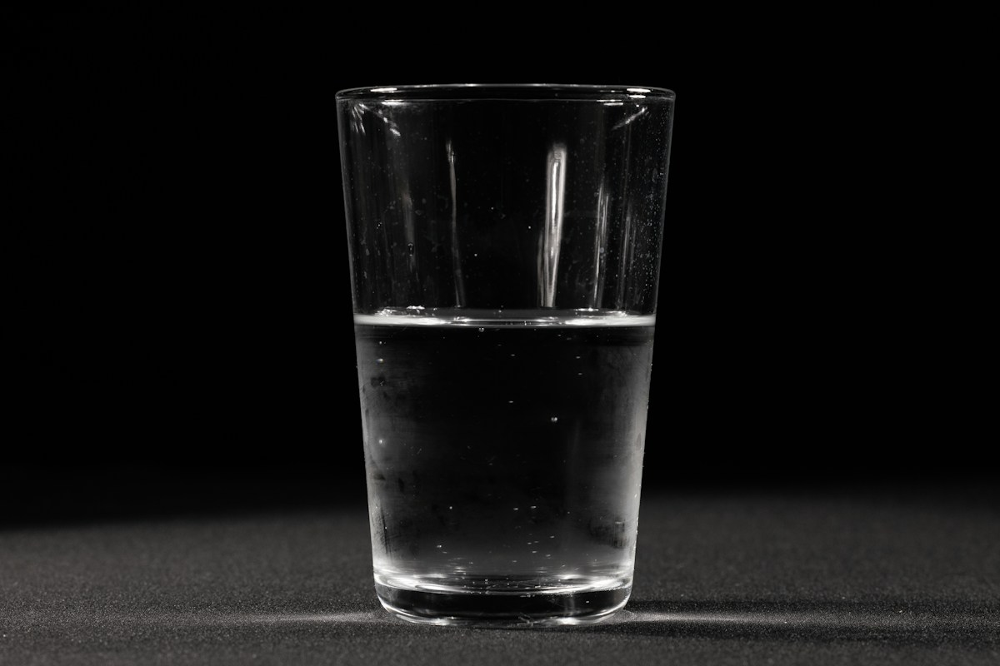
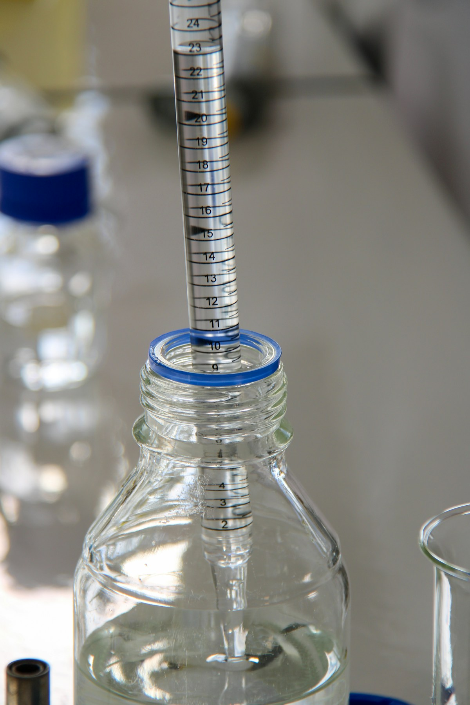
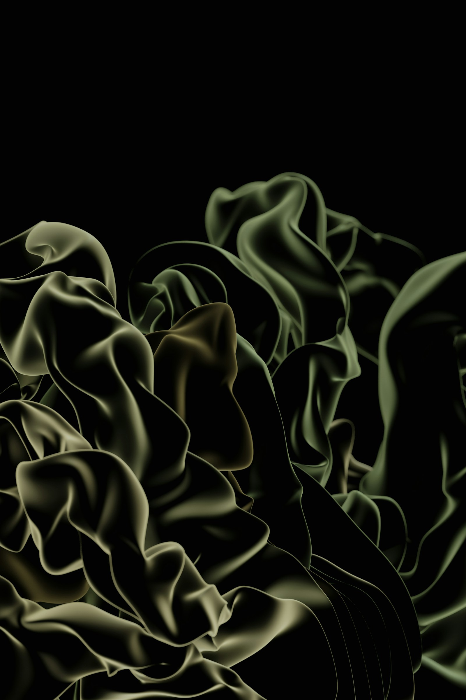
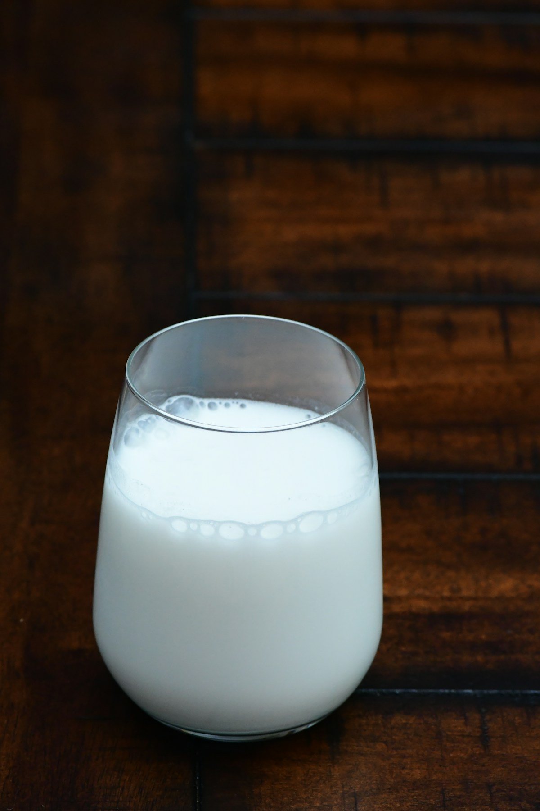

Everyday exposure, explained
Browse by topic or by element. Every article draws on peer-reviewed and official research.
Learn about environmental exposure and…
Element
Toxic elements
Essential elements
Other elements
15 of 15 articles

Arsenic in Rice: What the Studies Show (and Where Tea and Chocolate Fit In)
Written byNorthfield Bio team

Is Your Cookware Adding to Your Plate? Pots, Pans and Spices Explained
Written byNorthfield Bio team

Lead in Adulthood: Where Does It Still Come From?
Written byNorthfield Bio team

Deodorant or Antiperspirant: How Much Aluminum Gets Through?
Written byNorthfield Bio team
Two Common Metals Turning Up in Fertility Research
Written byNorthfield Bio team
Meet the Scientist Behind Vestige
Written byNorthfield Bio team

Lithium: Where Does Everyday Exposure Come From, and Why Measure It?
Written byNorthfield Bio team

What Is Manganese, Where Does It Come From, and Why Test for It?
Written byNorthfield Bio team

Barium: What It Is and Why It Is Worth Measuring
Written byNorthfield Bio team

Cobalt: Where It Comes From and Why It Matters
Written byNorthfield Bio team

Where Does Strontium Come From, and Why Test for It?
Written byNorthfield Bio team

Where Does Your Magnesium Come From, and Why Track It?
Written byNorthfield Bio team

Where Does Cadmium Exposure Come From, and Why Test for It?
Written byNorthfield Bio team

Why Measure Calcium, and Where Do We Meet It Every Day?
Written byNorthfield Bio team
Where Does Aluminum Exposure Come From, and Why Test for It?
Written byNorthfield Bio team
No articles match that filter yet.
See what's inside
a sample report.
Download sample reportLithium occurs naturally in some drinking water and is also prescribed to steady mood. Higher or prolonged exposure has been studied for effects on the kidneys and nervous system.
Arsenic traces
Start with a single strand of hair
A 30-day picture of your elemental exposure, with plain guidance to help shape the choices you make every day.
Order your test